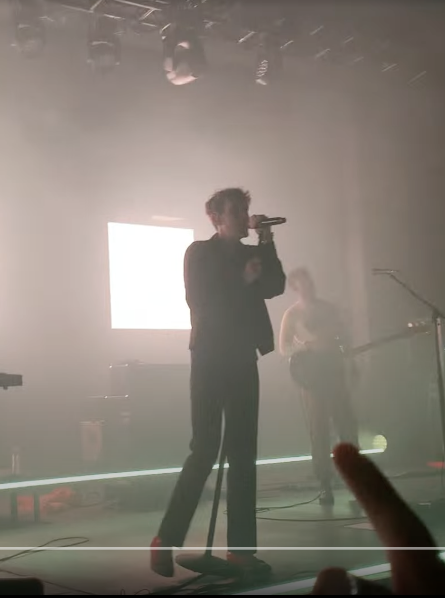

- My two best friends thought it would be fun to go to a concert, Quinn was touring so we went to him, although I didn't know a lot of his songs
- He is strikingly wholesome! Just a good person, gives kind uncle vibes
- Chelsea Cutler opened for him and came on with him to sing the few songs they had together!
- Full circle moment, I just bought tickets to see him again in October, since his new album LOOK! I'm Alive is ABSOLUTE FIRE MONEY

- Favorite Concert: Valley opening for COIN
- After Quinn, my friends and I caught the concert bug, all got jobs, and went frequently
- A few concerts later, one of my favorite bands opened for another favorite! Without trying I knew almost every lyric to every song, rule #1 to making a concert fun
- My friends and I were some of the only ones going crazy for the openers, but when COIN came on, we moshed with random guys next to us. The ones that get it, get it.
- COIN recently broke up, for good reason, and I wonder if I should stop listening to their music?

- Conan Gray is built like a Greek God sculpted from marble. Plus he writes captivating bridges that rip your heart out and feel good to belt out loud.
- He opened with one of my favorite songs of his, Wish You Were Sober, it was perfect
- Several people in the audience brought him pineapples, like at least three.

- The opening setlist for COIN was too short, I had to see Valley headline a show
- Before the concert, we made the jean jacket from their "Maybe" album to wear and posters to hold up
- I held up my poster, a flirty play on the first lyrics of one of their songs, as they started playing it. Rob Laska, the lead singer, saw me, laughed, and motioned for me to pass him my poster. He got it, looked at it, and showed it to the whole crowd. I screamed and passed away, came back to life, then kept screaming like a tween recently adopted by 1 Direciton.
- For my 19th birthday, my Dad took me to see one of my favorite bands at Colorado's Red Rocks Ampitheater. We didn't know it when we bought the tickets, but it's a famous destination venue!
- The ampitheater is an outdoor stage surrounded by rows of steps carved into the beautiful red rocks. Surrounding is gorgeous geology, huge orange rocks accented with vegetation and animals. Somehow, the rocks create the perfect acoustic environment for live music
- I was one of the youngest people there, it was then that I realized YTG, this alternative rock band, makes Dad Rock. Lucky thing I went with my father; he enjoyed it
- I cried when they played their song "Cough Syrup," very special because I had never cried at a concert before. It was beautiful, they can SING
- Coincidentally, there was a full blood moon that night too. Just perfect.